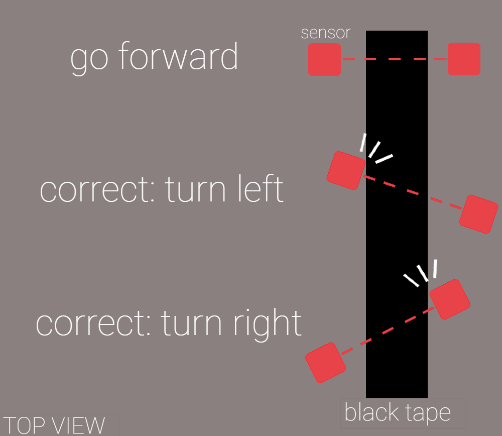

MILESTONE01
Objective
The purpose of this milestone was to add line following to our robot, through adding sensors and fine-tuning our servos. Our robot was able to follow a straight line and a figure-eight pattern.
Sensor Setup

We attached two sensors to the front of the robot, wide enough to lay outside of the line of tape - one sensor to the left and one to the right. If only one sensor detected a black line, we would know the robot had turned too far to one side and that we would have to correct the course. If both sensors detected a black line, we would know we were at an intersection.
Following a Line
In order to follow a line, we first set a reasonable threshold level - the value at which the sensors detect the black line rather than the white floor. We read from the sensors and checked to see if a sensor was above the threshold value (that sensor detected the black line). We then used a series of conditional statements to determine whether the robot should keep going forward or correct by turning to the left or right.
The following video shows our robot following a line:
We modified our servo code from Lab01 to include this sensor-reading and course-correction:
void loop() {
int frontLeftSensor = analogRead(A3);
int frontRightSensor = analogRead(A0);
// robot is tilted to the right
if (frontLeftSensor > threshhold) {
turnLeft();
}
// robot is tilted to the left
else if (frontRightSensor > threshhold){
turnRight();
}
// we're good!
else {
moveForward();
}
}
Figure Eight
In order to have our robot follow a figure eight, we modified our line-following code in order to ignore an intersection. If both sensors crossed their threshold, then an intersection was detected and the robot moved forward.
The following segment of code was written to traverse a figure eight:
void loop() {
int frontLeftSensor = analogRead(A3);
int frontRightSensor = analogRead(A0);
if ((frontRightSensor > threshhold) && (frontRightSensor > threshhold)){
moveForward();
delay(100);
}
else if ((frontRightSensor > threshhold) && (frontLeftSensor < threshhold)) {
turnRight();
}
else if ((frontRightSensor < threshhold) && (frontLeftSensor > threshhold)) {
turnLeft();
}
else {
moveForward();
}
}
The following video shows our robot in action:
We thought that a robot truly following a curve would show more an understanding of line following rather than hardcoding the robot to follow a grid style figure eight.
Looking Ahead
For our final robot design, we plan to change how our sensors are setup and implement a FSM that controls how our robot moves since we will have omni wheels that can move in any direction. The reason for this digression from normal line following robots is that omni wheel builds traverse grids quicker and the movement pattern is easier to implement. We also plan on implementing a PID style algorithm to make finer adjustments as well as include a sensor at the center of the robot to indicate the start of a turn. This will make line following exceptionally smooth.